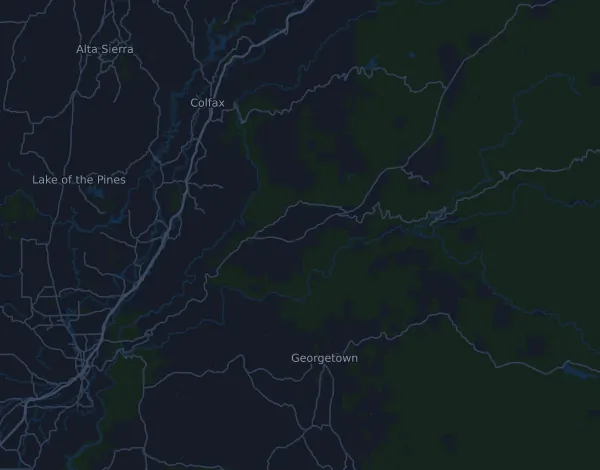

Canyons Endurance Runs by UTMB – 100M 158,7 km
- Distans
- 158,7 km
- Höjdmeter
- ↑ 5 665 m
- Högsta punkt
- 1 529 m ö.h.
- Underlag
- Terräng och stig
- Karaktär
- Mycket kuperad
- Start
- kl. 12:00
- Vätskekontroller
- 17
Höjdprofil
Förbered dig med Mila
Mila är en löpcoach i appen. Lägger du till ett lopp i din plan planerar coachen veckorna fram till start efter din form, och ger dig en tidsprognos och en plan för tempo, vätska och energi på banan.

Rätt pass. Rätt dag.
Banan

Om banan
Banan startar högt, på 1529 meter, och slutar drygt 1100 meter lägre. Med 5665 meter upp och 6808 meter ned fördelat på 36 klättringar är det ändå ett ständigt upp och ner. De tuffaste stigningarna kommer tidigt: 559 meter på drygt fyra kilometer vid km 13, den brantaste med 493 meter och 19 procents snittlutning vid km 21, och 370 meter vid km 31,5. Däremellan går det långt nedför, ner till cirka 245 meter efter ungefär 63 km. Sedan böljar banan mellan 400 och 500 meter, med en lång jämn stigning vid km 70 och en brant på 313 meter vid km 93. Efter en sista dal kring km 143 klättrar den upp mot målet i Auburn.
Banan kräver lår som tål tusentals höjdmeter nedför och en stark gång i branter där löpning sällan lönar sig. Bygg långpassen stegvis i kuperad terräng, gärna två långa dagar i följd, och träna både snabb uppförsgång och kontrollerad nedförslöpning. Styrka för lår, vader och fotleder gör att benen håller sent i loppet. Öva energi och dryck på varje långpass och spring några pass i mörker. Håll igen i de tidiga branterna.
Beskrivningen är skriven av Milas coach utifrån banans data.
Klättringar
| Börjar vid | Längd | Höjdmeter | Lutning | Topp (m ö.h.) |
|---|---|---|---|---|
| km 8,0 | 1,3 km | 43 m | 3,2 % | 1 176 |
| km 13,0 | 4,2 km | 559 m | 13,5 % | 1 323 |
| km 18,3 | 300 m | 25 m | 8,3 % | 1 332 |
| km 21,1 | 2,6 km | 493 m | 19,2 % | 1 332 |
| km 24,0 | 670 m | 27 m | 4,0 % | 1 336 |
| km 31,5 | 2,5 km | 370 m | 14,9 % | 921 |
| km 34,1 | 1,5 km | 161 m | 10,9 % | 1 078 |
| km 37,0 | 1,8 km | 112 m | 6,2 % | 1 135 |
| km 41,6 | 2,6 km | 230 m | 8,9 % | 1 033 |
| km 50,6 | 1,1 km | 67 m | 6,4 % | 642 |
| km 53,3 | 1,8 km | 40 m | 2,2 % | 632 |
| km 55,3 | 630 m | 46 m | 7,3 % | 671 |
| km 61,3 | 690 m | 91 m | 13,2 % | 370 |
| km 62,7 | 820 m | 46 m | 5,6 % | 342 |
| km 65,1 | 2,5 km | 42 m | 1,6 % | 290 |
| km 69,8 | 4 km | 291 m | 7,4 % | 519 |
| km 73,9 | 1,2 km | 42 m | 3,6 % | 556 |
| km 75,3 | 1,1 km | 25 m | 2,4 % | 559 |
| km 76,5 | 450 m | 31 m | 7,0 % | 583 |
| km 77,9 | 930 m | 30 m | 3,3 % | 544 |
| km 79,6 | 400 m | 25 m | 6,3 % | 526 |
| km 81,1 | 500 m | 25 m | 5,1 % | 486 |
| km 81,6 | 530 m | 42 m | 7,9 % | 522 |
| km 86,0 | 1,9 km | 195 m | 10,0 % | 389 |
| km 92,0 | 910 m | 38 m | 4,2 % | 206 |
| km 93,1 | 2,3 km | 313 m | 13,9 % | 496 |
| km 104,0 | 3,8 km | 285 m | 7,6 % | 456 |
| km 108,6 | 440 m | 34 m | 7,8 % | 424 |
| km 109,9 | 3,8 km | 92 m | 2,4 % | 475 |
| km 114,8 | 510 m | 27 m | 5,3 % | 455 |
Inför start
Vätskekontroller
| Vid | Här finns |
|---|---|
| km 18,0 | ej angivet |
| km 25,4 | ej angivet |
| km 36,4 | ej angivet |
| km 45,9 | ej angivet |
| km 59,1 | ej angivet |
| km 74,0 | ej angivet |
| km 86,7 | ej angivet |
| km 92,7 | ej angivet |
| km 93,8 | vatten |
| km 98,6 | ej angivet |
| km 101,4 | vatten |
| km 108,8 | vatten |
| km 118,3 | ej angivet |
| km 125,0 | ej angivet |
| km 133,7 | ej angivet |
| km 145,9 | ej angivet |
| km 155,8 | vatten |
Starttider
- kl. 12:00
Källa: canyons.utmb.world, hämtat 15 oktober 2026
Vanliga frågor
När går Canyons Endurance Runs by UTMB – 100M 158,7 km?
Canyons Endurance Runs by UTMB – 100M 158,7 km går fredag 23 april 2027. Kontrollera datum och starttid hos arrangören.
Vilken tid startar Canyons Endurance Runs by UTMB – 100M 158,7 km?
Enligt arrangören: kl. 12:00.
Hur lång är Canyons Endurance Runs by UTMB – 100M 158,7 km och hur många höjdmeter är det?
Loppet är 158,7 km långt med 5 665 höjdmeter uppför och 6 808 nedför. Högsta punkten ligger 1 529 m ö.h.
Hur ser banan på Canyons Endurance Runs by UTMB – 100M 158,7 km ut?
Banan räknas som mycket kuperad, med 36 höjdmeter per km i snitt. Den har 36 klättringar på minst 25 höjdmeter; den största börjar vid km 13,0: 559 höjdmeter på 4,2 km. Banan går från start till ett mål på en annan plats. Underlaget är terräng och stig.
Finns det vätskekontroller på Canyons Endurance Runs by UTMB – 100M 158,7 km?
Ja. Arrangören har 17 vätskekontroller: km 18,0; km 25,4; km 36,4; km 45,9; km 59,1; km 74,0; km 86,7; km 92,7; km 93,8 (vatten); km 98,6; km 101,4 (vatten); km 108,8 (vatten); km 118,3; km 125,0; km 133,7; km 145,9; km 155,8 (vatten).
Hur lägger jag upp farten på Canyons Endurance Runs by UTMB – 100M 158,7 km?
Sikta på en jämn ansträngning snarare än ett jämnt tempo: låt farten gå ner i uppförsbackarna, hämta tillbaka den när det planar ut, och håll igen de första kilometrarna. De största klättringarna börjar vid km 13,0, km 21,1, km 31,5 och km 93,1. I Mila får du en tempoplan för just den här banan efter din egen form.
Fler lopp som det här
Fler lopp i närheten
- Big Sur International Marathon 42,2 km25 april 2027 · Big Sur, USA
- Boston Marathon 42,2 km19 april 2027 · Hopkinton, USA
- Lake Sonoma 100K10 april 2027 · Healdsburg (Lake Sonoma Visitor Center), USA
- Credit Union Cherry Blossom Ten Mile Run 16 km4 april 2027 · Washington, D.C., USA
- BOLDERBoulder 10K31 maj 2027 · Boulder, Colorado, USA
- Western States 100-Mile Endurance Run 161 km26 juni 2027 · Olympic Valley, USA
Förbered dig med Mila
Rätt pass. Rätt dag.
Uppgifterna kommer ur banfilen och arrangörens information. Kontrollera datum, starttider och regler hos arrangören.
Mila är inte kopplad till, sponsrad av eller godkänd av arrangören eller loppets sponsorer. Namn och varumärken tillhör sina ägare. Arrangör eller rättighetsinnehavare? Begär ändring eller borttagning